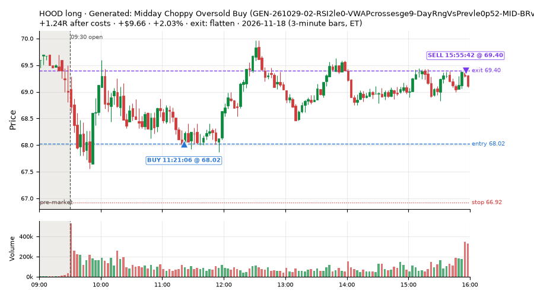
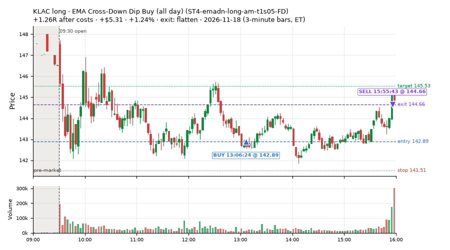
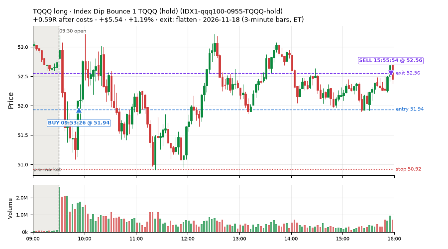
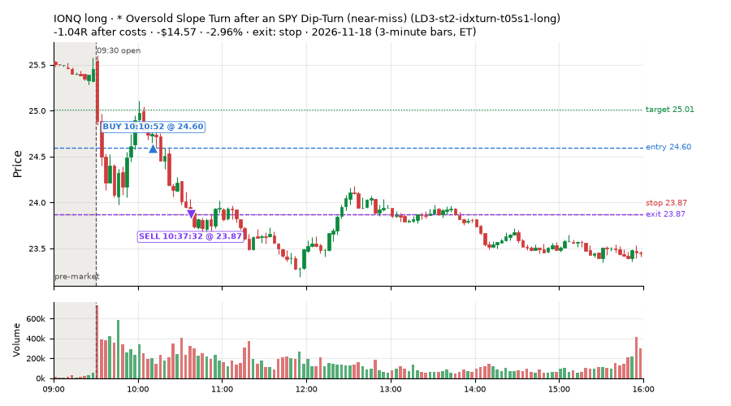
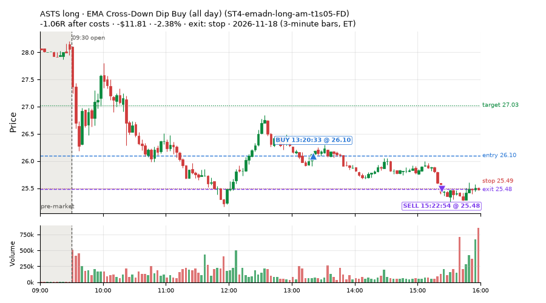
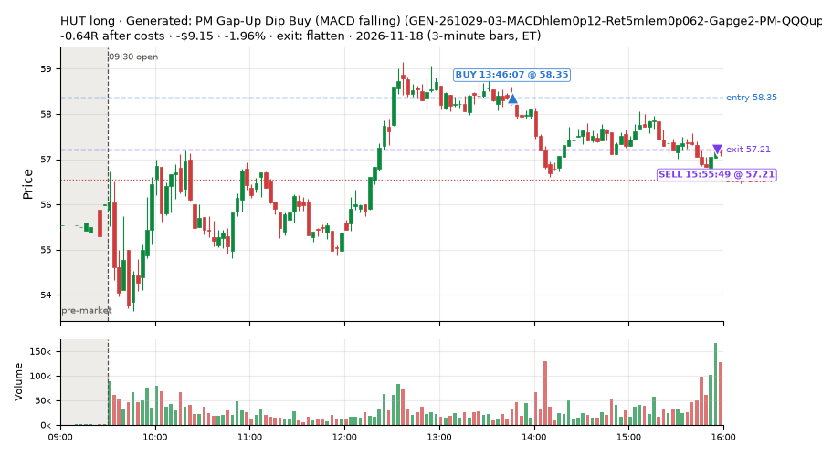
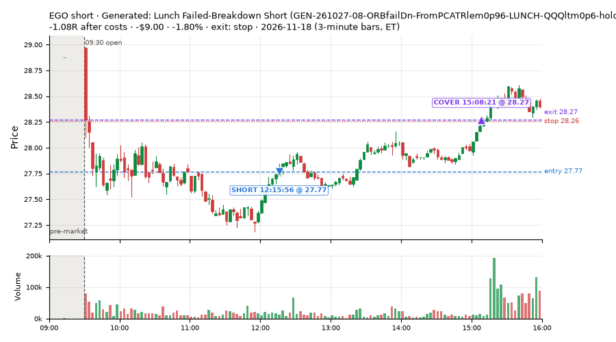
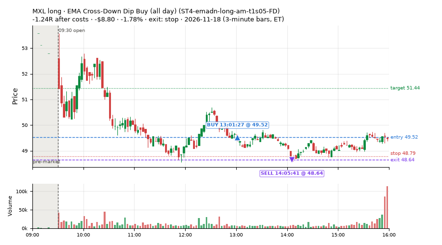

47 trades · win rate 43% · P/L $-49.31
PROBATION: no live setup has passed both locked test periods. 10 owner-directed setups added 2026-10-08 (MarcoFlow top 5 + 5 new), untested live. RW6G1 (RW6 + VWAP band guard) added 2026-10-09, probation.

| Symbol | Setup | Side | In | Out | Entry | Exit | Exit reason | % gained | P/L |
|---|---|---|---|---|---|---|---|---|---|
| HOOD | Generated: Midday Choppy Oversold Buy (GEN-261029-02-RSI2le0-VWAPcrossesge9-DayRngVsPrevle0p52-MID-BRvwlt0p4-hold-long) | long | 11:21 | 15:55 | 68.02 | 69.40 | flatten | +2.03% | $9.66 |
| KLAC | EMA Cross-Down Dip Buy (all day) (ST4-emadn-long-am-t1s05-FD) | long | 13:06 | 15:55 | 142.89 | 144.66 | flatten | +1.24% | $5.31 |
| TQQQ | Index Dip Bounce 1 TQQQ (hold) (IDX1-qqq100-0955-TQQQ-hold) | long | 09:53 | 15:55 | 51.94 | 52.56 | flatten | +1.19% | $5.54 |
| Symbol | Setup | Side | In | Out | Entry | Exit | Exit reason | % lost | P/L |
|---|---|---|---|---|---|---|---|---|---|
| IONQ | LD3-st2-idxturn-t05s1-long | long | 10:10 | 10:37 | 24.60 | 23.87 | stop | -2.96% | $-14.57 |
| ASTS | ST4-emadn-long-am-t1s05-FD | long | 13:20 | 15:22 | 26.10 | 25.48 | stop | -2.38% | $-11.81 |
| HUT | GEN-261029-03-MACDhlem0p12-Ret5mlem0p062-Gapge2-PM-QQQup-hold-long | long | 13:46 | 15:55 | 58.35 | 57.21 | flatten | -1.96% | $-9.15 |
| EGO | GEN-261027-08-ORBfailDn-FromPCATRlem0p96-LUNCH-QQQltm0p6-hold-short | short | 12:15 | 15:08 | 27.77 | 28.27 | stop | -1.80% | $-9.00 |
| MXL | ST4-emadn-long-am-t1s05-FD | long | 13:01 | 14:05 | 49.52 | 48.64 | stop | -1.78% | $-8.80 |








Signal to fill: median 1s, 90th percentile 3s (47 trades). Bars close each minute; the order follows the bar close.
Best excursion (MFE): median 0.62R; worst (MAE) median 0.75R. 13% of trades never got +0.25R in our favour; 2 reached +1R and still closed at or below 0.
| Symbol | Setup | Best R | Worst R | Closed R |
|---|---|---|---|---|
| UNH | CWT13-vwapstretch-z075-long | +1.93 | -2.02 | -1.30 |
| BNY | GEN-261029-02-RSI2le0-VWAPcrossesge9-DayRngVsPrevle0p52-MID-BRvwlt0p4-hold-long | +0.79 | -1.02 | -1.19 |
| PGR | GEN-261027-08-ORBfailDn-FromPCATRlem0p96-LUNCH-QQQltm0p6-hold-short | +0.62 | -1.04 | -1.08 |
| NEM | GEN-261020-03-MACDhge0p079-BarsSinceLODle5-MID-BRvwlt0p3-t05s05-long | +0.39 | -1.06 | -1.29 |
| MXL | ST4-emadn-long-am-t1s05-FD | +0.40 | -1.04 | -1.24 |
| Entry time | Trades | Win | Avg R | P/L |
|---|---|---|---|---|
| 09:50-10:30 | 6 | 33% | -0.02 | $-10.72 |
| 10:30-11:30 | 8 | 50% | -0.14 | $2.74 |
| 11:30-13:00 | 19 | 37% | -0.28 | $-29.03 |
| 13:00-14:00 | 11 | 45% | +0.05 | $-16.56 |
| 14:00-16:00 | 3 | 67% | -0.23 | $4.26 |
| Setup | Trades | Win | Avg R after costs | Adj R (net of SPY) | Avg R ex-market (all sessions) | P/L |
|---|---|---|---|---|---|---|
| Stretched Below VWAP Bounce (far) (CWT13-vwapstretch-z075-long) | 2.0 | 50% | -0.38 | -0.46 | -0.10 (beta +1.12, n 26) | $5.62 |
| Generated: Midday Low Bounce Buy (MACD up) (GEN-261020-03-MACDhge0p079-BarsSinceLODle5-MID-BRvwlt0p3-t05s05-long) | 4.0 | 25% | -0.45 | -0.85 | -0.74 (beta +1.89, n 9) | $-3.59 |
| Generated: Open RSI Surge Short (wide day) (GEN-261026-08-RSIslopege19-Ret5mge0p063-DayRngVsPrevge1p2-OPEN-SPYup-holdtr-short) | 1.0 | 100% | +0.89 | +0.82 | -0.62 (beta -2.22, n 13) | $5.36 |
| Generated: Lunch Failed-Breakdown Short (GEN-261027-08-ORBfailDn-FromPCATRlem0p96-LUNCH-QQQltm0p6-hold-short) | 14.0 | 36% | -0.35 | -0.17 | -0.12 (beta -0.76, n 37) | $-30.34 |
| Generated: Midday Choppy Oversold Buy (GEN-261029-02-RSI2le0-VWAPcrossesge9-DayRngVsPrevle0p52-MID-BRvwlt0p4-hold-long) | 4.0 | 50% | +0.08 | -0.27 | -0.46 (beta -0.10, n 20) | $7.73 |
| Generated: PM Gap-Up Dip Buy (MACD falling) (GEN-261029-03-MACDhlem0p12-Ret5mlem0p062-Gapge2-PM-QQQup-hold-long) | 3.0 | 67% | +0.03 | +0.17 | – | $-2.59 |
| Index Dip Bounce 1 TQQQ (hold) (IDX1-qqq100-0955-TQQQ-hold) | 1.0 | 100% | +0.59 | +0.63 | – | $5.54 |
| Gap-Down Rebound Overbought Short (all day) — WB4: no thin-R names, RSI(5) ≤ 90, slope ≤ 1.0 (L3-gap-slope-rsi5hi-FD-WB4) | 3.0 | 0% | -0.15 | -0.22 | – | $-6.06 |
| * Oversold Slope Turn after an SPY Dip-Turn (near-miss) (LD3-st2-idxturn-t05s1-long) | 3.0 | 0% | -0.45 | -0.42 | – | $-18.64 |
| Early Sellers, Mid-High RSI (MF2-open-rsimidhi-flowsell) owner-directed; holdouts once: Sep-Oct -0.108R n41, Apr-Jun +0.046R n171 | 1.0 | 0% | -1.10 | -1.00 | -0.35 (beta -1.90, n 14) | $-7.70 |
| Late-Day ETF Dip Buy — WB1: dip inside an up-hour (NM-ETF-late-dip-di-long-WB1) | 1.0 | 100% | +0.23 | +0.20 | – | $3.79 |
| Early NS3 Short While SPY Up (near-miss) (NM-RWN3-ns3-spyup-early-short) | 1.0 | 0% | -0.25 | -0.41 | +0.95 (beta +0.80, n 8) | $-2.98 |
| EMA Cross-Down Dip Buy (all day) (ST4-emadn-long-am-t1s05-FD) | 8.0 | 75% | +0.30 | +0.28 | +0.25 (beta +2.62, n 18) | $-0.17 |
| RSI Collapse Dip Buy, Nasdaq-below-VWAP only (all day) (ST7Q-rsi50dn-qqqbelowvwap-long-t1s1-FD) | 1.0 | 0% | -0.56 | -0.74 | -0.12 (beta +0.44, n 10) | $-5.28 |
Market direction (SPY, beta 1) accounted for $-7.22 of today's $-49.31; the rest ($-42.09) came from the setups themselves. Avg R net of SPY: -0.16 (incl. a hedge leg's cost; report only).
25 setups live today. Today: 98 signals, 47 taken, 1 lost because another setup held the symbol (1%). Since 2026-11-05 (10 sessions): 900 signals, 330 taken, 11 lost to other setups (1%). Peak open positions today 35 of 400 slots. Earnings blackout removed 321 symbols before scanning.
Simulated playing time (not live): 569 what-if trades of signals not taken, avg -0.04R, 50% winners; of them 11 lost to another setup (avg +0.16R).
Silent: GEN-261019-07-VolRatioge2-UpWickge0p59-DayRngVsPrevge1p5-LATE-SPYgt0p5-t05s1-long, GEN-261028-05-EMAdChgge0p093-ORLdistlem0p42-LAM-QQQgt0p6-holdtr-long, IDX2-spy075-0945-3x-trail, IDX5-spy050-0945-3x-trail, LD4-st4-breadthup-t1s05-long, LD8-spy-dip030-breadthturn-spxl-holdtr-long
| Prio | Setup | Today sig / taken | Sessions | Signals / taken / trades | Taken/day | Expected/day | Lost to other setups | Lost to (setup n) | Top skip reasons | SIMULATED: not-taken n / avg R / win | Verdict |
|---|---|---|---|---|---|---|---|---|---|---|---|
| 1 | Late-Day ETF Dip Buy — WB1: dip inside an up-hour NM-ETF-late-dip-di-long-WB1 | 1 / 1 | 2 | 1 / 1 / 1 | 0.50 | – | 0 | – | – | 0 / – | slow 2.5 entries/week; ~24 weeks to 60 trades |
| 2 | Gap-Down Rebound Overbought Short (all day) — WB4: no thin-R names, RSI(5) ≤ 90, slope ≤ 1.0 L3-gap-slope-rsi5hi-FD-WB4 | 12 / 3 | 2 | 19 / 3 / 3 | 1.50 | – | 0 | – | not shortable / shorts off 14, spread / quote / size 2 | 16 / +0.37R / 88% | slow 7.5 entries/week; ~8 weeks to 60 trades |
| 3 | Generated: Late Failed-Breakdown Pop Short — WB4: 14:30-15:00, pop >= 0.20 ATR, ADX(7) >= 44 GEN-261023-09-ORBfailDn-Ret15mge0p54-LATE-BRvwgt0p7-holdtr-short-WB4 | 0 / 0 | 2 | 0 / 0 / 0 | 0.00 | – | 0 | – | – | 0 / – | quiet - wait no signals in 2 session(s); too early to tell |
| 4 | Index Dip Bounce 1 TQQQ (hold) IDX1-qqq100-0955-TQQQ-hold | 1 / 1 | 10 | 1 / 1 / 1 | 0.10 | – | 0 | – | – | 0 / – | slow 0.5 entries/week; ~120 weeks to 60 trades |
| 5 | * Oversold Slope Turn after an SPY Dip-Turn (near-miss) LD3-st2-idxturn-t05s1-long | 4 / 3 | 10 | 5 / 4 / 4 | 0.40 | – | 0 | – | spread / quote / size 1 | 1 / -1.01R / 0% | slow 2.0 entries/week; ~30 weeks to 60 trades |
| 6 | * Oversold Pop with Breadth Turning Up (near-miss) LD1-ns1-breadthup-t05s1-long | 0 / 0 | 10 | 7 / 5 / 5 | 0.50 | – | 0 | – | spread / quote / size 1, price through stop/target 1 | 2 / -0.30R / 50% | slow 2.5 entries/week; ~24 weeks to 60 trades |
| 7 | Generated: Midday Low Bounce Buy (MACD up) GEN-261020-03-MACDhge0p079-BarsSinceLODle5-MID-BRvwlt0p3-t05s05-long | 16 / 4 | 3 | 72 / 9 / 9 | 3.00 | – | 0 | – | spread / quote / size 37, other 26 | 62 / -0.32R / 44% | ok 15.0 entries/week |
| 8 | Backside Lower-High Short CWT04-backside-lh-a15-short | 0 / 0 | 10 | 4 / 0 / 0 | 0.00 | – | 0 | – | not shortable / shorts off 4 | 4 / +0.55R / 50% | slow no entries yet |
| 9 | Generated: Late Volume Spike Buy (wide day) GEN-261019-07-VolRatioge2-UpWickge0p59-DayRngVsPrevge1p5-LATE-SPYgt0p5-t05s1-long | 0 / 0 | 3 | 0 / 0 / 0 | 0.00 | – | 0 | – | – | 0 / – | silent no signals in 3 session(s); no expected rate on file |
| 10 | Generated: Lunch Failed-Breakdown Short GEN-261027-08-ORBfailDn-FromPCATRlem0p96-LUNCH-QQQltm0p6-hold-short | 14 / 14 | 3 | 48 / 37 / 37 | 12.33 | – | 0 | – | spread / quote / size 5, other 5, not shortable / shorts off 1 | 11 / +0.28R / 64% | ok 61.7 entries/week |
| 11 | Generated: PM Upper-Wick Short (weak mkt) GEN-261022-05-MACDhge0p079-UpWickge0p71-ORHdistlem0p38-PM-BRoplt0p35-holdtr-short | 0 / 0 | 3 | 47 / 28 / 28 | 9.33 | – | 7 | GEN-261028-08-Ret5mge0p21-SMA20dlem0p16-Compress6le0p11-LUNCH-BRoplt0p35-holdtr-long 6, ST4-emadn-long-am-t1s05-FD 1 | symbol held by another setup 7, other 6, not shortable / shorts off 3 | 19 / -0.03R / 53% | ok 46.7 entries/week |
| 12 | Generated: Lunch Tight-Range Pop Buy GEN-261028-08-Ret5mge0p21-SMA20dlem0p16-Compress6le0p11-LUNCH-BRoplt0p35-holdtr-long | 0 / 0 | 3 | 144 / 67 / 67 | 22.33 | – | 2 | NM1-cwt09-g10-vwaploss-short 1, GEN-261027-08-ORBfailDn-FromPCATRlem0p96-LUNCH-QQQltm0p6-hold-short 1 | per-setup cap 55, spread / quote / size 10, other 9 | 77 / -0.12R / 36% | ok 111.7 entries/week |
| 13 | Gap-Down VWAP Loss Short, Slope Filter (near-miss) NM1-cwt09-g10-vwaploss-short | 1 / 0 | 10 | 79 / 4 / 4 | 0.40 | – | 0 | – | not shortable / shorts off 69, other 4, spread / quote / size 2 | 75 / -0.02R / 55% | slow 2.0 entries/week; ~30 weeks to 60 trades |
| 14 | Generated: Late-AM Below-Range Turn Buy GEN-261028-05-EMAdChgge0p093-ORLdistlem0p42-LAM-QQQgt0p6-holdtr-long | 0 / 0 | 3 | 0 / 0 / 0 | 0.00 | – | 0 | – | – | 0 / – | silent no signals in 3 session(s); no expected rate on file |
| 15 | Generated: PM Prior-High Dip Buy (QQQ down) GEN-261023-04-EMAdChglem0p028-PDHdistle0p074-EMAdifflem0p46-PM-QQQltm0p6-t1s1-long | 0 / 0 | 3 | 12 / 4 / 4 | 1.33 | – | 0 | – | other 5, spread / quote / size 3 | 8 / -0.29R / 50% | slow 6.7 entries/week; ~9 weeks to 60 trades |
| 16 | NS2 Up-3 Short, QQQ Up, Slope Down (near-miss) NM-RWR4-ns2-up3-qqqup-slopedn-short | 0 / 0 | 10 | 46 / 27 / 27 | 2.70 | – | 0 | – | spread / quote / size 13, not shortable / shorts off 4, other 2 | 19 / +0.17R / 84% | slow 13.5 entries/week; ~4 weeks to 60 trades |
| 17 | RSI Collapse Dip Buy, Nasdaq-below-VWAP only (all day) ST7Q-rsi50dn-qqqbelowvwap-long-t1s1-FD | 1 / 1 | 10 | 19 / 10 / 10 | 1.00 | – | 0 | – | spread / quote / size 7, other 2 | 9 / -0.32R / 33% | slow 5.0 entries/week; ~12 weeks to 60 trades |
| 18 | Early NS3 Short While SPY Up (near-miss) NM-RWN3-ns3-spyup-early-short | 5 / 1 | 10 | 24 / 8 / 8 | 0.80 | – | 0 | – | spread / quote / size 8, not shortable / shorts off 7, other 1 | 16 / +0.57R / 81% | slow 4.0 entries/week; ~15 weeks to 60 trades |
| 19 | Generated: PM Gap-Up Dip Buy (MACD falling) GEN-261029-03-MACDhlem0p12-Ret5mlem0p062-Gapge2-PM-QQQup-hold-long | 6 / 3 | 3 | 6 / 3 / 3 | 1.00 | – | 0 | – | other 2, spread / quote / size 1 | 3 / +0.36R / 67% | slow 5.0 entries/week; ~12 weeks to 60 trades |
| 20 | Early Sellers, Mid-High RSI MF2-open-rsimidhi-flowsell | 7 / 1 | 10 | 60 / 14 / 14 | 1.40 | 1.30 | 0 | – | per-setup cap 19, spread / quote / size 16, other 6 | 46 / -0.52R / 20% | slow 7.0 entries/week; ~9 weeks to 60 trades |
| 21 | Generated: Open RSI Surge Short (wide day) GEN-261026-08-RSIslopege19-Ret5mge0p063-DayRngVsPrevge1p2-OPEN-SPYup-holdtr-short | 5 / 1 | 3 | 28 / 13 / 13 | 4.33 | – | 0 | – | spread / quote / size 14, not shortable / shorts off 1 | 15 / +1.94R / 80% | ok 21.7 entries/week |
| 22 | Generated: Midday Choppy Oversold Buy GEN-261029-02-RSI2le0-VWAPcrossesge9-DayRngVsPrevle0p52-MID-BRvwlt0p4-hold-long | 6 / 4 | 3 | 25 / 20 / 20 | 6.67 | – | 0 | – | other 4, spread / quote / size 1 | 5 / -0.65R / 40% | ok 33.3 entries/week |
| 23 | Stretched Below VWAP Bounce (far) CWT13-vwapstretch-z075-long | 2 / 2 | 10 | 120 / 26 / 26 | 2.60 | – | 0 | – | per-setup cap 67, spread / quote / size 15, other 12 | 94 / -0.13R / 43% | slow 13.0 entries/week; ~5 weeks to 60 trades |
| 24 | Down-Stock Volume Spike Buy (all day) ST8-volspikedn-long-pm-t1s1-FD | 2 / 0 | 10 | 28 / 18 / 18 | 1.80 | 1.05 | 1 | MF2-open-rsimidhi-flowsell 1 | spread / quote / size 6, other 2, symbol held by another setup 1 | 10 / +0.05R / 80% | slow 9.0 entries/week; ~7 weeks to 60 trades |
| 25 | EMA Cross-Down Dip Buy (all day) ST4-emadn-long-am-t1s05-FD | 15 / 8 | 4 | 33 / 18 / 18 | 4.50 | 2.77 | 1 | GEN-261027-08-ORBfailDn-FromPCATRlem0p96-LUNCH-QQQltm0p6-hold-short 1 | spread / quote / size 9, other 5, symbol held by another setup 1 | 15 / +0.32R / 60% | ok 22.5 entries/week |
Every trade is attached as a CSV you can open and edit in Excel or Google Sheets. Live page: https://misiti15.github.io/MCF/live/